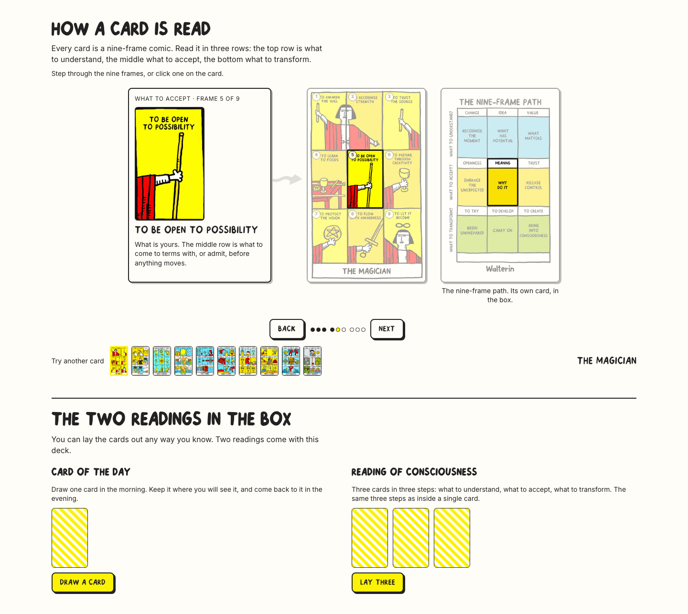
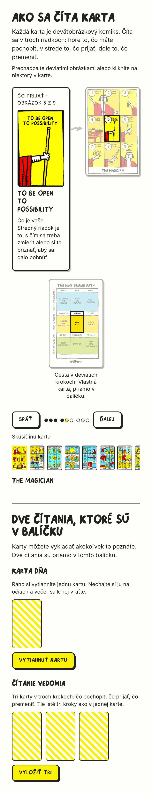
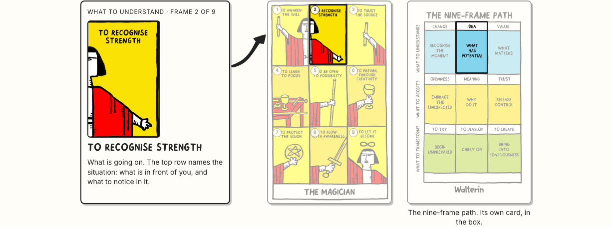
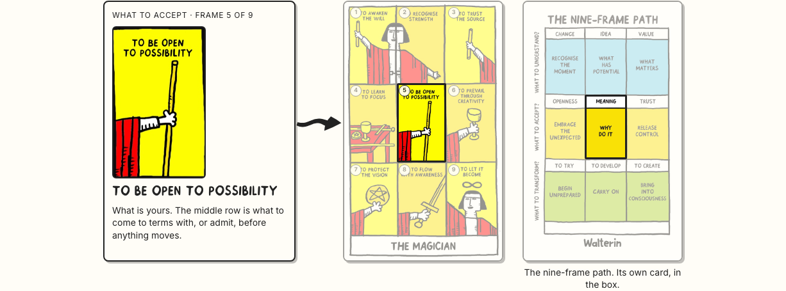
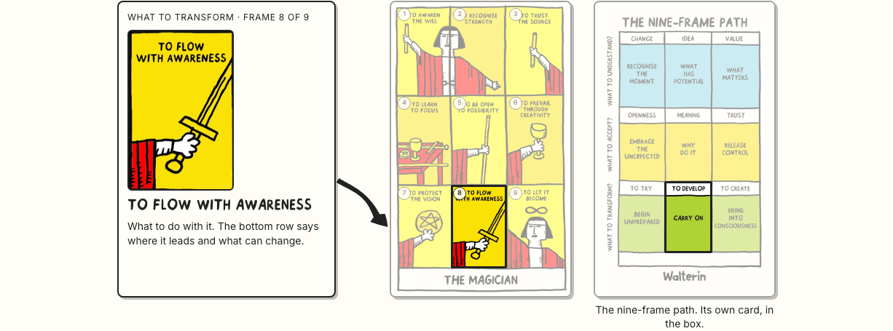

The section as it was — the dimming, the note, the layout, the typography — with the row colours, the coloured header, the coloured dots and everything else from the last two rounds removed. Ink, paper, yellow; the artwork brings the colour. One thing was kept from the newer work: the nine-frame path, and it is treated as what it is — another card from the box, the same size and shape as the tarot card beside it, always on screen, with one line naming it.


Three drawings, not one shape turned three ways. Each is a filled marker stroke: the weight grows along the stroke, both edges tremble slightly and independently, and the head is solid and broad. The climb sags then swings up and thickens as it goes; the level one carries the double waver of a hand holding a line; the fall leaves the note flat with a pool of ink at the start, dips, and lands heavy. The point stops in the gutter — 12 to 29px clear of the card at 1440 and at 390 — and marks the row the active frame is in. Nothing ever touches the artwork.



The three arrows on their own, at 1440, at 390 and at 3×
The note stays on the left at every width, as agreed: an arrow pointing right reads as "goes to", the eye is travelling that way already, and a side that never changes means the layout never reshuffles as you step.
Rendered from the print PDF at the card's own proportions — the page is 238 × 391pt, which is 84 × 138mm, so it
already is a card. Same width, same height, same border, same corner, same shadow as the tarot card next to it. As you step,
its cell lights up under the same dimming the card uses; the cell positions are measured off the printed grid lines.
Files: nine-frame-path-card.png 82 KB and .webp 85 KB at 800 × 1314. One line underneath, and nothing else:
"The nine-frame path. Its own card, in the box." / "Cesta v deviatich krokoch. Vlastná karta, priamo v balíčku."
Still flagged, still untouched: the printed diagram's green against the cards' turquoise. You are raising it with Walter.
| 1440 × 900 | 390 × 844 | |
|---|---|---|
| Two readings start at | 833px — one screen | 1268px |
| The note ends at | 592px | 692px — above the fold |
| The two cards | 250 × 408 each, tops aligned · 140 × 229 on the phone | |
| Arrow clearance from the card | 18.5 – 28.7px | 12.4 – 18.5px |
| Path card cell follows all nine frames | pass | pass |
| Layout shift over eight steps | 0.0001 | 0.0001 |
| Palette — ink, paper, yellow only | pass | pass |
| Nothing past the content edge · no horizontal scroll | pass | pass |
| Keyboard, reduced motion, Chromium + WebKit, EN + SK | pass | pass |
On the phone the path card sits under the note and the card — three cards will not fit across 390px. It is always there, never toggled.